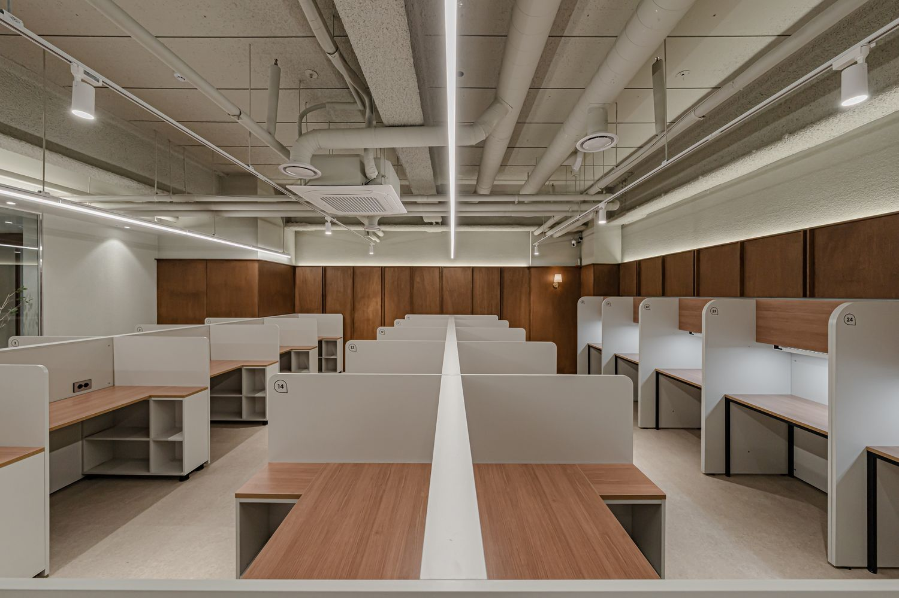
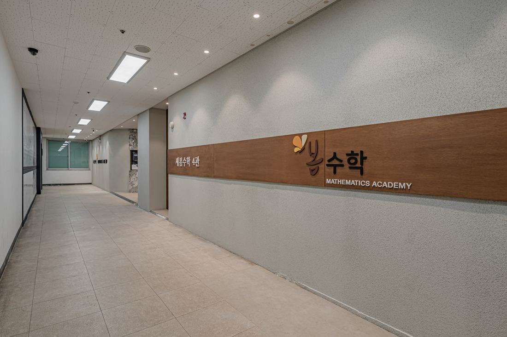

수원 영통의 24시간 관리형 자습 공간입니다. 학생마다 자기 좌석이 있고, 관리자가 상주하며, 들어오고 나간 시간은 학부모님 휴대폰으로 바로 전해집니다. 새봄수학에 다니는 학생만 이용할 수 있습니다.
전화 문의 031-273-0982
자리를 빌려주는 곳이 아닙니다. 언제 왔고 얼마나 앉아 있었는지, 오늘 무엇을 하기로 했는지를 기록하고 관리합니다.
관리자가 3교대로 자리를 지킵니다. 교대할 때는 그날 있었던 일을 서면으로 인수인계해서, 담당이 바뀌어도 학생에 대한 정보가 끊기지 않습니다.
학생이 키오스크에서 입실·퇴실하면 학부모님 휴대폰으로 카카오 알림톡이 바로 발송됩니다. 몇 시에 왔고 몇 시에 갔는지 그때그때 확인하실 수 있습니다.
학생마다 전용 좌석이 정해져 있습니다. 매일 같은 자리에 앉는 것만으로도 학습 습관이 훨씬 빨리 자리를 잡습니다.
학생이 그날의 계획과 실행을 플래너에 적어 올리면 그날로 검사가 들어갑니다. 등급과 코멘트가 붙어 학생앱·학부모앱에 그대로 올라갑니다.
오기로 한 시간에 입실 기록이 없으면 학부모님께 미입실 안내를 드립니다. 빠진 날이 그냥 지나가지 않습니다.
등록된 학생만 열 수 있는 자동문으로 운영합니다. 외부인이 드나들지 않는 환경에서 공부합니다.
"관리합니다"라는 말로는 무엇을 하는지 알 수 없으니, 학생의 하루가 실제로 어떻게 기록되는지 그대로 적었습니다. 자동이라고 표시한 것은 사람이 잊어버릴 수 있는 일을 시스템이 대신 처리하는 부분입니다.
플래너를 걷기만 하고 학기 말에 몰아서 훑는 곳이 많습니다. 저희는 사진이 올라온 그날 자동으로 한 번 읽고, 선생님이 원본과 대조해 등급과 코멘트를 확정합니다. 학생은 다음 날 아침에 어제 플래너에 대한 답을 받습니다.
아래 세 편은 학생들에게 실제로 나간 코멘트에서 옮겼습니다. 학생이 드러나는 부분은 가렸습니다. 학생에게 직접 건네는 글이라 말투가 반말입니다. 읽어보시면 저희가 매일 무엇을 보는지가 그대로 보입니다 — 어제 한 말을 오늘 지켰는지, 같은 항목이 며칠째 밀리는지, 하루 중 어느 시간에 무엇을 놓는지입니다.
전날 코멘트에서 권한 것을 실행했는지, 다음 날 바로 확인합니다.
"어제 말한 순서 바꾸기, 오늘 진짜로 해냈네. 국어 워크북 45문항 실전 과제를 오전 9시에 시간 재고 먼저 풀고, 수학 복습은 점심 뒤로 미뤘어. 밥 먹고 나른한 시간에 국어를 앉혔던 어제까지랑 완전히 반대야. 그래서 메모에도 '생각보다 빨리 끝나 국어 과제를 완료했다'고 적을 수 있었던 거고. 머리 맑은 시간에 가장 힘든 걸 놓으니까 결과가 바로 달라졌지. 다만 한마디 칸에 '컨디션이 안 좋아 잠이 온다'고 또 적은 게 걸려. 사흘째 잠 얘기가 나오거든. 이건 배치 문제가 아니라 밤 컨디션 문제일 수 있으니, 내일 학원 다녀와서 몇 시에 눕는지 나한테 한번 말해줘."
하루치가 아니라 며칠의 흐름을 이어서 봅니다.
"나흘 내내 X·△로 맴돌던 영어 단어장 day12에 드디어 O가 찍혔네. 어제 밤 자기 전에 그 자리에서 외워버리라고 했던 걸 실제로 한 모양이야. 게다가 오늘은 아예 계획표 맨 첫 줄에 영어를 올려놨더라. 남는 시간에 하는 게 아니라 먼저 닫는 걸로 자리를 바꾼 거지. 그런데 이번엔 수2 문제집이 X로 완전히 빠졌어. 지난 며칠은 그래도 △였는데 오늘은 손도 못 댄 거야. 영어를 위로 올린 대신 수2가 맨 아래로 밀려 똑같은 자리에서 또 잘려나간 거지. 미루는 항목이 영어에서 수2로 바뀐 것뿐이야. 내일은 오후 첫 시간에 수2부터 절반만 딱 정해놓고 앉아. 남은 절반은 그날 밤이 아니라 모레 같은 시간에 이어서 하고."
잘한 것은 짚어주고, 다음에 볼 것을 한 가지 정해줍니다.
"아침 7시부터 주황이 칠해졌네. 지난 며칠 9시 시작을 오늘은 두 시간 더 당긴 거야. 그 덕에 오전 세 시간을 영어에 통으로 쓰고 11시부터 밤 9시까지 수학을 이어붙였어. 눈에 걸리는 건 메모칸에 적은 '논술 문제 더 풀 p16, p17'이야. 오늘 모의논술 두 개를 O로 끝냈는데도 스스로 다음에 더 풀 범위를 남겨둔 거지. 그 판단이 맞아. 논술은 한 학교 문제만 풀고 넘어가면 답안 쓰는 감각이 안 쌓이니까. 그런데 나흘째 계획이 전부 O로 닫히고 있어. 문제집도 인강도 한 번에 다 O가 됐는데, 틀린 문제를 다시 푼 칸이 계획에 한 번도 안 보여. 내일은 논술 p16, p17 옆에 '이번 주 틀린 것 다시 풀기'를 한 줄 넣어봐. 새 진도만 O로 채우면 틀린 게 그대로 남아."
이 코멘트는 검사 등급과 함께 학생앱·학부모앱에 그대로 올라갑니다. 학생이 읽는 글을 학부모님도 같은 화면으로 보십니다.
입·퇴실 기록과 매일의 플래너 검사가 쌓이면, 기간을 정해 한 장짜리 학습리포트로 정리합니다. 순공시간 그래프부터 교재별 진도, 그리고 맨 끝에 담임 선생님이 쓰는 '선생님 의견'까지 담아 학부모님 카카오톡으로 보내드립니다. 아래는 이번 여름방학에 실제로 발송된 리포트에서 옮긴 것입니다. 학생이 드러나는 부분은 가렸습니다.
24일간의 기록입니다. 실제 입·퇴실 시각과 매일 제출한 플래너에서 자동으로 집계했습니다.
실제 리포트에는 이 위에 주차별·날짜별 순공시간 그래프, 과목별 시간 배분, 교재별 진도(처음 → 마지막 기록), 등원 시각의 변화와 외출 합계, 상·벌점 내역, 담임 코멘트 모음이 함께 실립니다.
"7월 말과 8월 초 두 주 동안 ◯◯는 하루 10시간을 넘긴 날이 여러 번 있었고, 주간 순공 챌린지도 넉넉히 넘겼습니다. 다만 세 주가 지나면서 등원 시각이 조금씩 뒤로 밀리고 마지막 주에는 결석 없이 나오면서도 앉아 있는 시간이 짧아졌습니다. 총량은 같은 학년 평균보다 앞서 있지만, 지금 ◯◯에게 남은 과제는 시간을 더 늘리는 쪽이 아니라 하루 안에서 어느 과목을 먼저 놓을지 정하는 쪽으로 보입니다. 본인도 플래너 한마디에 시간 분배가 어렵다고 적어 두었습니다."
수학 문제집 한 권을 16일에 걸쳐 붙잡았고, 마지막 기록은 오답 정리로 넘어가 있었습니다. 새 교재를 자꾸 꺼내지 않고 한 권을 앞에서 뒤까지 끌고 간 뒤 틀린 문제로 돌아온 흐름입니다. 수학이 이 기간 가장 많은 시간을 차지한 것도 이 한 권 덕입니다.
국어 교재 기록을 보면 처음에는 'Day1 P10~P17'처럼 범위가 있었는데, 뒤로 갈수록 교재 이름만 남았습니다. 오래 앉아 있던 과목이라 분량이 적었을 리는 없고, 급하게 적다 보니 범위를 생략한 것으로 보입니다. 다음에 어디서부터 이어야 할지 본인도 찾기 어려워집니다.
학기가 시작되면 낮 시간을 학교가 쓰기 때문에 ◯◯가 스스로 발견한 점심시간 30분과 등교 전 아침이 중요해집니다. 집에서는 공부 내용을 묻기보다 잠자리에 드는 시각만 일정하게 잡아 주시면 좋겠습니다. 방학 후반에 등원이 늦어진 것도 아침 리듬에서 시작된 것으로 보입니다.
리포트는 한 장짜리 이미지로 저장되어 학부모님 카카오톡으로 발송되고, 상담 때는 이 리포트를 같이 펴놓고 이야기합니다. 숫자는 시스템이 집계하지만, 의견은 아이를 실제로 지켜본 선생님이 확인하고 고쳐서 내보냅니다.
하루에 여덟 시간을 앉아 있는 공간이라면, 공기와 빛과 온도가 성적에 관여합니다. 눈에 잘 안 보이는 것들에 먼저 돈을 썼습니다.
창문을 열지 않아도 바깥 공기가 계속 들어옵니다. 나가는 공기의 온도를 회수해서 들여오기 때문에, 환기를 해도 실내가 춥거나 덥지 않습니다. 오후에 몰려오는 졸음의 상당 부분은 이산화탄소 탓입니다.
시간대와 자리에 맞춰 밝기를 조절합니다. 너무 밝으면 눈이 빨리 피로해지고, 어두우면 집중이 흐트러집니다. 오래 읽어야 하는 공간에 맞춘 밝기로 맞춰 둡니다.
구역별로 지금 몇 명이 앉아 있는지에 따라 냉난방이 자동으로 켜지고 꺼집니다. 사람이 깜빡해서 하루 종일 돌아가거나, 반대로 아무도 안 켜서 더운 채로 앉아 있는 일이 없습니다.
사진을 누르면 크게 볼 수 있습니다. 실제로 쓰는 공간을 그대로 찍었습니다.

새봄면학관은 영통에서 수학 학원을 해 온 새봄수학이 재원생을 위해 만든 자습 공간입니다. 학원에서 학생을 관리하던 방식 — 진도 확인, 플래너 점검, 학부모 공유 — 을 자습 공간으로 그대로 옮겼습니다. 두 곳이 같은 시스템으로 연결되어 있어 학원 수업과 면학관 자습 기록이 한 화면에서 관리되고, 그래서 면학관을 따로 떼어 회원을 받지 않습니다.

한 학교에 몰린 결과가 아닙니다. 고1·고2·고3 전 학년에서, 서로 다른 학교의 학생들이 1등급을 받았습니다. 고3은 미적분과 확률과 통계 양쪽 모두에서 나왔습니다.
4등급에서 1등급으로, 3등급에서 1등급으로.
올려본 경험이 있는 곳과 없는 곳은 학생을 대하는 방식이 다릅니다. 면학관을 만든 이유도 같습니다 — 수업 시간만으로는 부족하고, 혼자 앉아 있는 시간이 결국 성적을 만들기 때문입니다.
좌석, 알림톡, 플래너 관리, 스터디룸, 앱이 모두 이용권 하나에 들어 있습니다. 쓰는 만큼 따로 붙는 비용은 없습니다.
월별 이벤트 할인 제도가 있습니다. 정확한 금액과 적용 가능한 할인은 전화 주시면 바로 안내해 드립니다.
이용료는 학년과 등록 조건에 따라 달라져 상담 시 안내해 드립니다. 별도의 입회비나 관리비는 없습니다.
좌석 배정, 시간표, 이용 방법까지 통화 한 번으로 안내해 드립니다.
전화 문의 031-273-0982| 이용 자격 | 새봄수학 재원생면학관은 학원에 다니는 학생을 위한 공간으로, 별도 회원 등록은 받지 않습니다. |
|---|---|
| 이용 시간 | 연중무휴 24시간시험 기간에도 시간 제한 없이 이용하실 수 있습니다. |
| 출입 방법 | 등록 학생 전용 자동문키오스크에서 본인 확인 후 입실·퇴실이 기록됩니다. |
| 휴대폰 | 등원 시 제출점심시간·저녁시간·밤 10시~10시 30분에는 자유롭게 사용합니다. |
| 위치 | 경기도 수원시 영통구 반달로29, 3층 1호 (영통동) 네이버 지도에서 보기 |
| 등록 문의 | 031-273-0982상담은 전화 또는 온라인 예약으로 접수합니다. |
등록하시면 학생용·학부모용 앱을 안내해 드립니다. 학생은 시간표와 플래너를 스스로 관리하고, 학부모님은 같은 기록을 그대로 보십니다. 설치할 필요 없이 링크로 바로 열립니다.
등록하면 학생이 지켜야 할 약속이 두 가지 있습니다. 매일 플래너를 쓰는 것, 그리고 정해진 규칙을 지키는 것. 무엇을 왜 요구하는지 전문을 공개합니다.
이용하실 수 없습니다. 새봄면학관은 새봄수학에 다니는 학생을 위한 공간입니다. 면학관만 따로 등록하는 회원제는 운영하지 않습니다.
수업에서 배운 것을 혼자 앉아 소화하는 시간까지 함께 관리하려고 만든 곳이라, 학원 수업과 자습 기록이 하나로 이어질 때 제대로 작동합니다. 학원 등록을 함께 고민 중이시라면 031-273-0982로 문의해 주세요.
연중무휴 24시간 열려 있습니다. 시험 기간에도 시간 제한이 없습니다. 다만 방학 기간에는 오전 9시부터 밤 11시 50분까지 운영합니다. 학생마다 요일별 등원 시간표를 미리 정해서 운영합니다.
학생이 키오스크에서 입실·퇴실하면 학부모님 휴대폰으로 카카오 알림톡이 바로 발송됩니다. 몇 시에 왔고 몇 시에 갔는지 그때그때 아실 수 있습니다.
오기로 한 시간에 입실 기록이 없으면 미입실 안내도 따로 나갑니다. 지난 기록과 누적 공부 시간은 학부모앱에서 언제든 보실 수 있습니다.
등원할 때 제출합니다. 점심시간, 저녁시간, 밤 10시~10시 30분에는 돌려받아 자유롭게 사용합니다. 그 외 시간(쉬는 시간 포함)에 사용하면 벌점이 있습니다.
네, 1인 지정 좌석제입니다. 학생마다 전용 좌석이 있어 매일 같은 자리에 앉습니다. 좌석은 학생앱의 배치도에서 고릅니다.
없습니다. 월 이용권에 포함되어 있습니다. 학생앱에서 교시별로 신청하면 배정됩니다.
네, 매일 씁니다. 그날 페이지를 다 쓰고 사진 한 장을 앱으로 올리면 되며, 다음날 낮 12시가 마감입니다. 결석한 날도 제출합니다.
올라온 사진은 그날 자동으로 한 번 검사되어 등급(우수·양호·보통·부실)과 요약이 나오고, 선생님이 원본과 대조해 코멘트를 확정합니다. 학부모님도 앱에서 그대로 보십니다.
무엇을 어떻게 쓰게 하는지, 검사 결과가 실제로 어떻게 돌아오는지는 플래너 작성법에 예시까지 공개해 두었습니다.
기준은 하나입니다 — 늦게라도 하면 1점, 아예 안 하거나 말없이 빠지면 2점. 미리 알려 주기만 하면 벌점이 없거나 크게 줄어듭니다.
목표 공부시간 달성이나 개근에는 상점을 드리고, 상점이 쌓이면 벌점이 자동으로 지워집니다. 점수와 사유는 학생앱·학부모앱에서 언제든 확인하실 수 있고, 갑자기 조치가 이루어지는 일은 없습니다. 항목별 점수는 상·벌점 제도 안내에 전부 적어두었습니다.
신용·체크카드와 계좌이체로 결제하시며, 월 단위 이용권입니다. 별도의 입회비나 관리비는 없습니다. 환불 기준은 아래 환불 규정에 그대로 적어두었습니다.
전화 031-273-0982로 문의해 주세요. 새봄수학 재원생이시면 면학관 좌석 배정만 안내드리고, 학원부터 알아보시는 경우에는 통화에서 함께 안내해 드립니다.
공간은 위 사진으로 확인하실 수 있고, 더 궁금하신 점은 통화로 안내해 드립니다.
이 약관은 새봄면학관(이하 "면학관")이 제공하는 자습 공간 이용 서비스의 이용 조건과 절차, 이용자와 면학관의 권리·의무를 정합니다.
면학관은 지정 좌석 자습 공간, 입퇴실 알림, 학습 플래너 관리, 스터디룸 등 부대시설을 제공합니다.
이용 계약은 학생 또는 보호자가 등록을 신청하고 면학관이 승낙하며 이용료를 결제한 때 성립합니다. 이용 기간은 결제일 기준 1개월 단위입니다.
이용자는 다른 학생의 학습을 방해하지 않아야 하며, 시설물을 훼손한 경우 배상 책임을 질 수 있습니다.
환불은 이 홈페이지에 게시된 환불 규정에 따릅니다.
학생 이름, 학생·보호자 연락처, 이용 기간 정보를 수집합니다.
좌석 배정 및 이용 관리, 입퇴실·미입실 알림 발송, 이용료 수납 관리, 학습 관리 목적으로만 이용합니다.
이용 종료(퇴원) 후 1년까지 보관하며 이후 지체 없이 파기합니다. 다만 관계 법령에 따라 보존이 필요한 결제 기록은 해당 법령이 정한 기간 동안 보관합니다.
알림톡 발송을 위한 메시지 발송 대행사 외에는 개인정보를 제3자에게 제공하지 않습니다.
개인정보 관련 문의는 031-273-0982 또는 doctorj011@gmail.com으로 해주시기 바랍니다.
좌석 배정, 시간표, 이용 방법 등 궁금하신 점은 전화로 안내해 드립니다. 공간은 위 사진으로 확인하실 수 있습니다.
031-273-0982| 주소 | 경기도 수원시 영통구 반달로29, 3층 1호 (영통동) |
|---|---|
| 지도 | 네이버 지도 · 카카오맵 |
| 이메일 | doctorj011@gmail.com |